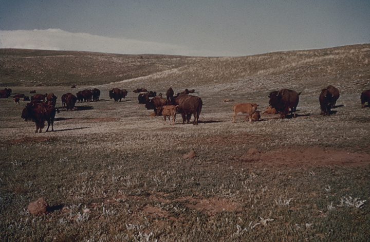
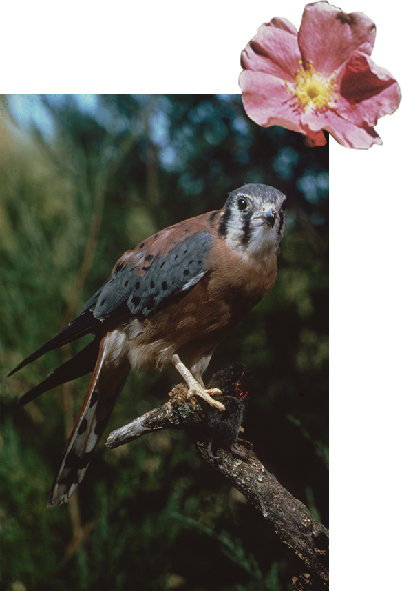

By the time I was 7, my parents had already taken me to 5 or more National Parks and on countless walks in our local and state parks. I was lucky to have parents that got me not just outside, but who taught me a deep empathy and appreciation for the outdoors. They were park rangers while still in college getting their Master’s, living under the shadow of Devil’s Tower in Wyoming while learning about conservation and biology.
They encouraged me each day to appreciate the beauty of our backyard, and to protect the living creatures in it. Through all of this, my parents taught me something that I now see so plainly- we have a responsibility to care for the earth, and to give back to the environment that provides for us.
In our fast paced and consumer driven world, it is hard to develop a connection with nature, but this is what are parks are for- they are a playground for a younger generation to connect with the world around them. They are an organized way to protect large portions of our land in the US from over development and pollution. The parks system is an educational tool and a national resource, one that we are lucky to have. In addition, preserving small parcels of land in communities and keeping them out of the hands of those who wish to develop them is crucial to protect local ecosystems and keep our air breathable.
Put simply, our success in intertwined with the success of our natural world, and it is our job to protect it from ourselves. The parks system is largely fighting an internal battle for funding and support while the wear and tear on parks due to increased visitation demands more upkeep. (1) In a short two years, Trump has proposed 31% budget cuts to the Environmental Protection Agency. (2) After withdrawing from the Paris Accords, the current administration has made it clear that they do not care to upkeep and protect our natural resources. As John Garder, Director of Budget and Appropriations for National Parks Conservation Association, states, “...the deep cuts to the Department of the Interior and key EPA clean water and enforcement programs demonstrate how irresponsible this budget is. The cuts to land acquisition, water restoration and historic preservation programs are nothing short of alarming. Cutting this funding fails to recognize how essential these programs are to protecting national parks, our natural resources and our cultural heritage.” (2)

In a world where we now rely on each other globally for resources, we cannot idly sit by while our consumption depletes our forests and ruins our drinking water. It's easy for people to turn a blind eye when consequences are not instantaneous or in a far-off country. Far too often, humans do not take action until it affects them personally. We are not safe, nor above these repercussions. The middle and upper classes simply do not have to deal with the consequences of say, unhealthy drinking water in Flint, or toxic waste buildup in Love Canal. As of now, only 51.9% of our earth’s livable landmass is left untouched or undisturbed by human presence. (3) We are the biggest invasive species that our planet is combating.
The decision to stand with the environment and with our national parks is not truly difficult because of the results that it implies. By doing so we are prioritizing of their own health, livelihoods, and future. For if we want to continue to survive and advance the human condition, we must also think of the environment that we put ourselves in. The effects of generations of apathy are so close in the future that we can no longer ignore the problems that we are contributing to. The parks are just one very small part of a grander system that we can use to promote conservation and teach others about the importance of keeping parts of our land wild.

The parks are not only for US citizens, and we have a duty to the rest of the world to make change from within. The United States is the third largest country in the world, and therefore has a huge responsibility to conserve its resources. (4) The parks are part of a larger global resource of natural space, and we must support them. Through our national parks, we interact with and preserve ecosystems that we might otherwise lose.